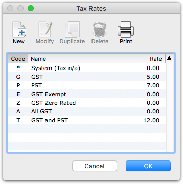
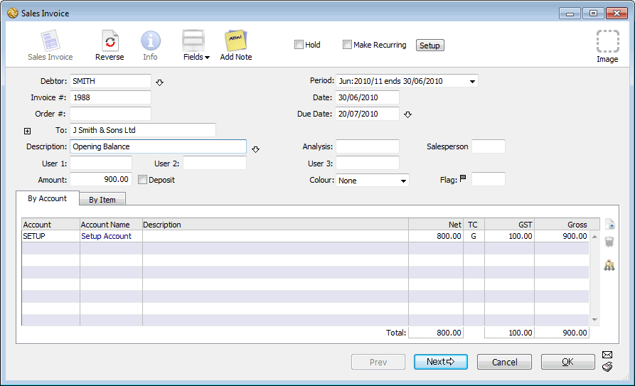
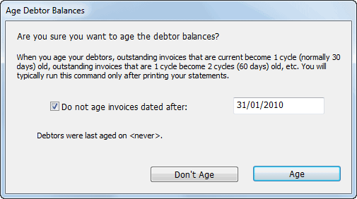
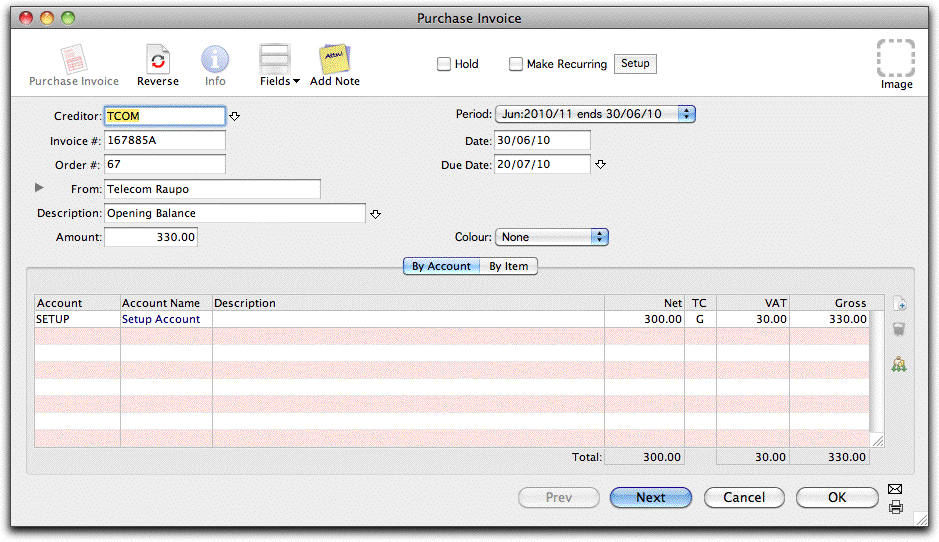
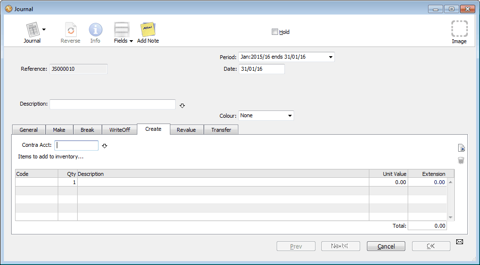

As part of your setup, MoneyWorks will have created a tax table for you based on the VAT, GST or Sales Tax rates in your location. It is important that you check this—we do not supply tax rates for every location, and the rates in your
location may have changed since your version of MoneyWorks was created. To check your tax rates:

Double click a rate to modify it
For more information on tax tables, see Tax Codes
Tip: If you have need to enter a lot of tax codes, they can be imported from a text file (see Importing Tax Rates).
Unless your business is just starting, there will be transactions entered prior to the Start Date which do not get completed until after the Close-off Date. For example you may have received an invoice and not paid it until the end of the following month.
These incomplete transactions need to be handled specially. We are not interested in the detail of the transaction because it occurred prior to the Start Date. However we do need to record enough information so that details of its completion can be recorded (e.g. when you finally pay the unpaid invoice).
A few points to note on entering incomplete transactions:
They will all be dated before your Start Date and will appear in your Setup Period
MoneyWorks is not interested in the finer details of what the transaction was for, but only that it is not yet completed. Hence these transactions are not coded to income or expense accounts (this has presumably already been done outside MoneyWorks). We code all incomplete transactions to the Setup account.
These transactions will all affect your balance sheet in some way
The transactions should have the same GST, VAT or Sales Tax as the original
It is important that taxes on the opening transactions are correctly handled. Normally you will have accounted for any such tax in your previous system, so you want to be careful not to double count it. However if someone doesn’t pay one of the outstanding invoices, you will want to reclaim the tax.
Also, where you are reporting for GST or VAT on a payments/cash basis, MoneyWorks will look at the original invoice to determine the GST/VAT component of the payment. Hence it is important that the GST/VAT component of these is correctly stated.
For these reasons the Setup accounts should be always be setup to reflect the rate on the original transactions, and thus will have a “TAX” rate in North America, a “G” tax rate GST countries, and a “V” rate in VAT countries. You
should check in the Accounts list —see Modifying an Account that the Setup account(s) match your local tax requirements.
The following sections should be used as a guide to entering your opening balances. Bear in mind that situations do vary, and this general “recipe” may not work for you. If in doubt ask your accountant.
It is probable that some of the cheques that you wrote out prior to the Start Date are presented to the bank after the Close-Off Date. This may even be true for some deposits received by you if you are not in the habit of daily banking. You need to identify these transactions, and handle them specially.
Before you start, you should make a list of all unpresented cheques as at the Start Date. These are cheques that were written out before the Start Date, but were not presented (i.e. do not appear on your bank statement) until on or after the Start Date.
Enter each cheque as a cash payment as follows:
Check that the bank account is set correctly, and enter the cheque number, date, and payee for the cheque
This information should be on the cheque butt.
Type “Unpresented item” in the description
Code the amount of the cheque to the Setup Account
Click the Next button to enter the next cheque, or OK for the last
It is important to check your work. Make sure that the amount of the cheques entered into MoneyWorks is the same as the total of unpresented cheques on your list —use the Sum Selection command. Also make sure that they are all dated prior to your startup date, and appear in your Setup Period.
This is required for MoneyWorks Express and MoneyWorks Gold only.
You need to enter any invoices that you sent or received prior to the MoneyWorks Start Date. You might have subsequently paid these, but the key thing is that they were outstanding on your Start Date.
As an example, assume that you are setting up MoneyWorks to start on April 1st. At the close of trading on March 31st, you would probably have some outstanding invoices—you might not yet have paid the phone account for February or a supplier for goods received in early March. Similarly some of your customers may not have paid you for goods or services provided, even though they were invoiced in March or earlier. It is these invoices, outstanding on the 31st March that constitute the opening balances for receivables (i.e. debtors—people who owe you money) and payables (i.e. creditors—people to whom you owe money).
These opening receivable and payable invoices need to be entered into MoneyWorks. Because they occurred prior to the period of interest, they need to be treated specially. The best way to handle these opening balances is to enter all of the outstanding invoices. These will go into the Setup Period, so that in the example above, they would be entered as March transactions.
Normally when you enter invoices you indicate what income or expense accounts will be affected by the invoice. However, for the opening invoices, these will be accounted for elsewhere. All we want is the total owing or owed for each invoice. Therefore we will code them to the Setup account (trust us, we do know what we are talking about!).
Before you start to do this, you should ensure that you have copies of every invoice that was sent out prior to your startup date and which have not been paid at the startup date.
If you have a lot of opening invoices that are already in electronic format it may be possible to import them instead of having to rekey them. See Exporting & Importing for a discussion on importing.
To enter your Opening Receivables:
If you are unsure of how to create a new sales invoice, please work through the tutorial, or see Entering Sales Invoices.
As this is the first time you have used this code, it will not be recognised so the choices list will be displayed —see Entry and Validation where a Code is Required.
The Debtor entry screen will be displayed.
Fill out the information in this screen —see Creating a New Name. Most of the details will be on the invoice. You should have the name and address, and it is also useful to put in the phone and fax. When all the details are entered, click OK.
Enter the invoice date
The period menu should set itself to the Setup Period4.
In the Description field, type “Opening Balance”
This is for your reference only.
Type “SETUP” and press tab
SETUP is the code for the setup account. If you have created a special one for opening receivables, use that code.
The final entry should look something like this.

Note: The SETUP account has been set up at the normal tax rate, and tax is automatically subtracted from the gross. If the invoice was taxed at a different rate, change the Tax Column to reflect that rate (for example if it had no tax, you will need to key the amount of the invoice into the Net column and set the tax code (TC) column to “E” (NZ, UK or Canada), “F” (Australia), “EXE” (USA) and so forth).
Click the Next button or press keypad-enter to enter the next invoice
It is important to check that you have entered all these invoices correctly. To check the amount, you should add up the total amount (tax inclusive) of all the invoices. You should then compare this amount against the total of the invoices in MoneyWorks. Use the Sum Selection command to do this.
Check the total in MoneyWorks against the manual total of the actual invoices. If they are not the same, you need to check your entries.
You also need to check that all the opening balance invoices occur in the Setup Period. If your Start Date is April 1st, all these transactions should be in the March period.
The simplest way to check this is just to “eyeball” the period column when the Sales Invoices list is displayed in the Transaction window.
If you want to maintain the ageing of your receivables, then once all invoices were entered (and posted):
The Age Debtor Balances window will be displayed.

Turn on the Do not age invoices entered after option, and enter the cut-off date for the oldest invoices
For example, if you are starting in April, this will be three months prior, so enter 31 January.
Click Age
The posted invoices dated before the date will be aged one cycle. Ones dated after the date will not be affected.
Repeat steps 1-3 for the subsequent two months
Before you commence, you should make sure that you have a copy of every invoice that you had received prior to the Start Date but that was paid on or after the Start Date, or is still unpaid.
Entering your opening payables is analogous to entering your opening receivables, except that you enter them in as Purchase Invoice transactions. Thus an opening purchase invoice will look something like this:

Points to note:
The transaction date should be before the Start Date, and the period must
be the Setup Period
The invoice is coded to the Setup account
In a GST/VAT environment, the tax amount on the entry should correspond to the tax amount on the original invoice (for pure sales tax, this is not important as the tax is not reclaimable)
You need to check the total of the invoices entered against the actual total
When you are satisfied that all is correct, you should Post the transactions
If you intend to use the inventory system in MoneyWorks Gold, you will need to have done a stock take as at the close of trade on your Close-Off Date. You will then need to enter this, either by means of a Stock Journal or by using the MoneyWorks stocktake feature.
Although you can specify the products as you create each line in the journal, it is a better idea to enter your products into MoneyWorks before you attempt the journal —see Creating a New Item. Remember that the buy and sell prices that you enter will be those as at your Start Date.
The opening stock is entered through a Stock Creation Journal. For ease of entry, limit the number of items in each stock journal to about 50.
This is used to “create” stock out of nothing.

Ensure the Date is set to the Close-Off Date
If you have created a special stock setup account, set it to that.
For each product, enter the quantity on hand at your stock take, and its unit value
Each product code will take up one detail line
You should total up the value from your stock take and compare this with the total value of the stock creation journal(s). Note that these figures are GST exclusive. The stock quantities can be checked by printing off the stock list —see Printing a Product List.
When you have checked that the stock is entered correctly, post the journal(s).
The MoneyWorks Stocktake feature allows you to enter just the quantities on hand in a list view. Points to note:
The items will be brought into stock at the average unit value from the product record (or the last Buy Price, if there are no items in stock as in this case). You must ensure that this price is correct;
The stock take date is the Close-Off Date;
For the special case of setting up only, the stock adjustment account will be the inventory account (a current asset). Normally it will be an expense/cost of sales account.
Note: This is not required for pure sales tax countries such as the USA.
If you have been entering opening balances as described in the previous sections, MoneyWorks will have been keeping track of your GST for you. However you will already have accounted for this GST elsewhere, so we need to clear it. We need therefore to do a special one-off GST report from MoneyWorks, and journal out this GST. Otherwise we are in danger of double counting it.
Note: You should do this GST report after all your opening transactions have been entered (the opening journal can if necessary be entered after).
The GST Report Setup window will be displayed. Check that it is reporting on the correct basis (payments or invoice), that the GST report date is set to the close-off date, and that the Show Transactions option is set.
You will be asked if you want to finalise it. Before you do this, check that all the transactions that appear on the report appear correct.
The only GST that should appear in the report is that for unpresented items and unpaid invoices—all other transactions listed should have zero GST components. If you haven’t claimed back this GST previously (which would be the normal case), you will need to manually adjust the results of your next report to account for it.
If there are any errors you should not finalise the report. Rather correct the transactions by entering adjustments —see Cancel Transaction and redo the GST report.
The transactions on the report will be tagged as having been processed for GST. They will not appear in future GST returns. We assume (of course) that the GST has been calculated for these in the previous system.
Note: If the Close-Off Date does not coincide with the end of your GST cycle, you will need to reset the Next Cycle Ends On date in the GST preferences to the date the next GST cycle ends after your Start Date.
The balance sheet is a list of all the assets and liabilities of the organisation, and will probably have been prepared by your accountant. Remember that the balance sheet that is required is as at the Close-Off Date, and constitutes the opening balance of your accounts for MoneyWorks. The balance sheet may not be available until some time after you have commenced using MoneyWorks.
Before you start entering the balance sheet, you should ensure that all the necessary accounts have been created in your chart of accounts. The balance sheet will have accounts on it that you don’t normally use, such as “Issued & Paid Up Capital” to represent your share holding.
Some of the information (such as your opening receivables, payables, and bank balance) will have been already entered in the preceding steps. If this is the case, you should put these balances against the Setup account. This effectively cancels out the balances that were previously entered against the Setup account. When you have entered (and posted) the opening journal, the balance
in the Setup account at the end of the setup period should be zero (make sure you check this).
To enter the balance sheet:
Ensure the General tab is selected
The journal will be a standard general ledger journal, not a stock journal.
This will ensure that it is put into the Setup Period.
For each entry in your balance sheet, create a detail line in the journal with the appropriate general ledger code, and the balance sheet amount debited or credited as appropriate
Remember that any lines referring to balances that have already been entered (such as Accounts Payable and Accounts Receivable, and possibly Bank and Stock) will be put against the appropriate Setup account.
If you have used the Bank Balances window (or a previous journal) to enter bank balances, use the SETUP account instead of the bank account.
If you didn’t use the Bank Balance window, debit the correct bank accounts with the balances. You must do a Bank Reconciliation to account for the opening transaction —see Bank Reconciliation.
The accounts payable from your balance sheet will be represented by a credit to the SETUP account (or the SETUPP account, if you used that for opening payables). If you entered your opening invoices as GSTable, you need to credit the SETUP account by the net amount, and the GSTPaid account by the GST amount.
The accounts receivables from your balance sheet will be represented by a debit to the SETUP account (or the SETUPD account). If you entered your opening invoices as GSTable, you need to debit the SETUP account by the net amount, and the GSTRec account by the GST amount.
The stock on your balance sheet will be represented by a debit to the SETUP account (or the SETUPS account).
When you have entered the last line, the debits and credits should balance.
To debit or to credit: For non-accountants, it can be tricky to know whether to debit or credit an item. MoneyWorks normally takes care of this for you, but it cannot do so in journals. Here are some guidelines to help you decide for your opening journal:
Current Assets (stock, receivables etc.) are normally entered as debits. Thus your bank account balance will be entered as a debit (unless you are overdrawn, in which case it will be a credit).
Current Liabilities are entered as credits.
Fixed Assets (computers, office equipment) are entered as debits.
Term Liabilities (bank loans, mortgages) are entered as credits.
Shareholders funds (share capital, retained earnings) are credits.
If you enter the journal the “wrong way round”, use the Reverse command in the Edit menu to reverse it (Windows users press Ctrl-Shift-V).
Checking the Journal: Once the journal is entered, you should check the balance sheet. The easiest way to do this is to print the Balance Sheet report as at the end of the Setup Period, and have the “Include Unposted” option set.
This will treat the as yet unposted opening journal as if it had been posted.
Although the information in the report will probably be laid out differently, the actual values should be the same for each account. In particular the Setup Account(s) should have a zero balance.
When you are satisfied that the Journal is correct, you should post it.
Lock the Setup Period: As this will complete the setup process, you should close (or at least lock) the Setup Period —see Closing a Period.
Once the setup is complete, you will no longer require the Setup account(s), and it should be removed. Before doing this you should check that it has a zero balance by using the Account Enquiry—see Finding Account Balances.
Because the Setup account has transactions against it, it cannot just simply be deleted. Instead, MoneyWorks allows you to merge the account with another of the same type —see Merging Accounts. We recommend that you create a “Suspense Account” (if none exists), and merge the Setup account(s) with this by doing the following:
Display the list of accounts by pressing Ctrl-1/⌘-1
Highlight the Setup account(s)
Choose Edit>Delete Account
You will be prompted for an account code of the same type.
Click Merge
The opening transactions will now refer to the suspense account instead of the Setup account. The Setup account record(s) will be removed.
1 Something like an incorrect opening bank balance can be corrected later on, so is not a disaster. But better (and much easier) to get it right at the outset.↩︎
2 For simplicity, we will refer to VAT and Sales Tax as GST in the remainder of this chapter↩︎
3 If you don’t use the bank balances screen to establish your bank balances, you will need to do a special bank reconciliation to clear any journalled amounts.↩︎
4 If it doesn’t, check the period end date —see Managing Financial Periods.↩︎